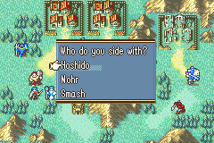
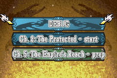

Choices and Battle Saves
last updated v0.1
Choices
You can give the player a choice in an event. This is done through the use of the choice command.
The choice command takes in three required arguments:
The name of the choice
The choice text or question
A comma-delimited list of available options
Example:
choice;fates;Who do you side with?;Hoshido,Nohr,Smash

The choice that the player chooses will be saved in the game_vars under the name you gave the choice. The most recent choice made is also saved in game_vars under _last_choice. So you can access their choice with game.game_vars['fates'] or game.game_vars['_last_choice'].
if;'{v:_last_choice}' == 'Smash'
u;Corrin;Left
s;Corrin;I choose to SMASH!
r;Corrin
end
Battle Saves
Battle saves give the player the opportunity to make a save while in the middle of a chapter. You can use this to give the player a save after completing a tough objective. Or perhaps you give the player the opportunity to battle save only at the beginning of every fifth turn. Or you have certain save point regions that when activated allow the player to save the game. There are lots of possibilities.

The battle_save event command tells the engine to create a battle save after the event is complete.
You can give the player a choice too!
choice;battle_save;Would you like to save?;Yes,No;h
if;'{v:battle_save}' == 'Yes'
battle_save
end